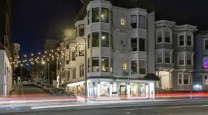
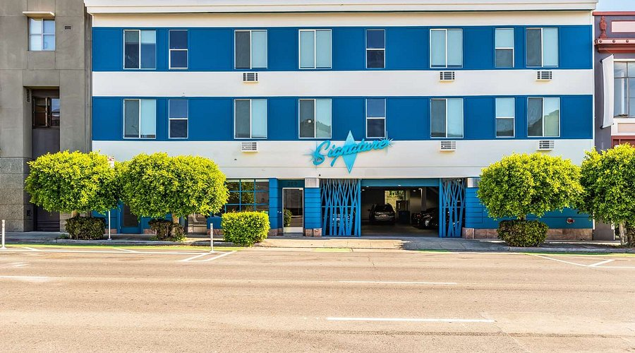
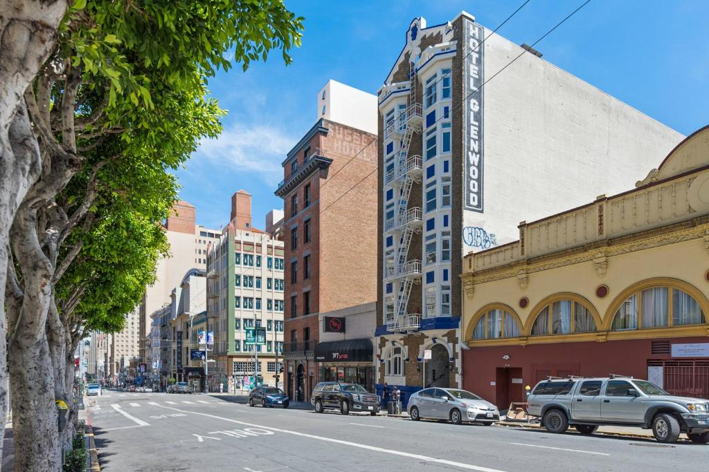
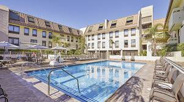
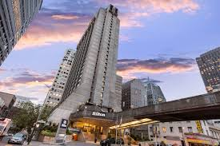
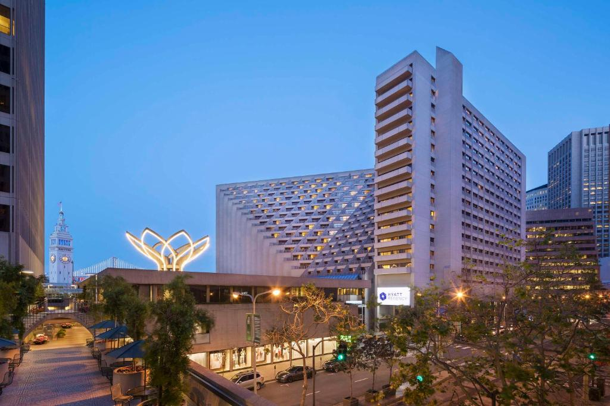

| Hotel | Price | Facilities |
|---|---|---|
 Chapter San Francisco |
₹5,070 | Chapter San Francisco offers a variety of amenities for guests, including free Wi-Fi, laundry facilities, and luggage storage. They also provide common areas with microwaves and refrigerators, as well as a coffee/tea station. For those needing to check out quickly, express check-out is available. |
 Signature San Francisco |
₹9,002 | Signature San Francisco offers a range of amenities for guests, including free Wi-Fi, complimentary breakfast, and 24-hour front desk service. Additional features include housekeeping, air conditioning, and options for family rooms and disabled access. |
 Kasa La Monarca San Francisco |
₹9,502 | Kasa La Monarca San Francisco offers several amenities including free Wi-Fi, laundry facilities, and a shared kitchen. Guests can also enjoy express check-in/check-out, a shared lounge/TV area, and pet-friendly accommodations. The property provides a contactless self check-in experience and housekeeping services are available upon request. |
 Hotel Riu Plaza Fisherman's Wharf |
₹17,923 | Its complete facilities include free WiFi, an outdoor pool, gym and conference rooms. This hotel in San Francisco has more than 500 rooms that are perfectly equipped to offer you maximum comfort. Each of them has satellite TV, a mini-fridge, coffee machine and air conditioning, and many more amenities. |
 Hilton San Francisco Financial District |
₹28,336 | The Hilton San Francisco Financial District offers a range of facilities including a fitness center, dining options like 750 Restaurant & Bar and a Lobby Wine and Beer Bar, meeting rooms, and pet-friendly accommodations. It also provides services such as valet parking, laundry, and concierge. |
 Hyatt Regency San Francisco |
₹47,266 | The Hyatt Regency San Francisco offers a range of facilities including a 24-hour fitness center, a large atrium, multiple meeting and event spaces, a restaurant, a bar, and a grab-and-go market called The Market. It also provides amenities like free Wi-Fi, laundry service, and valet parking. |
| Have a Happy Stay in San Francisco! | ||